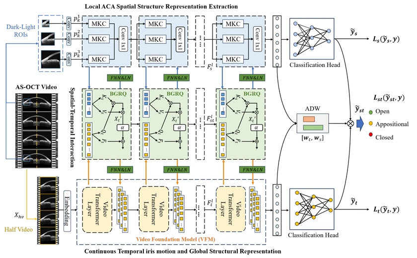
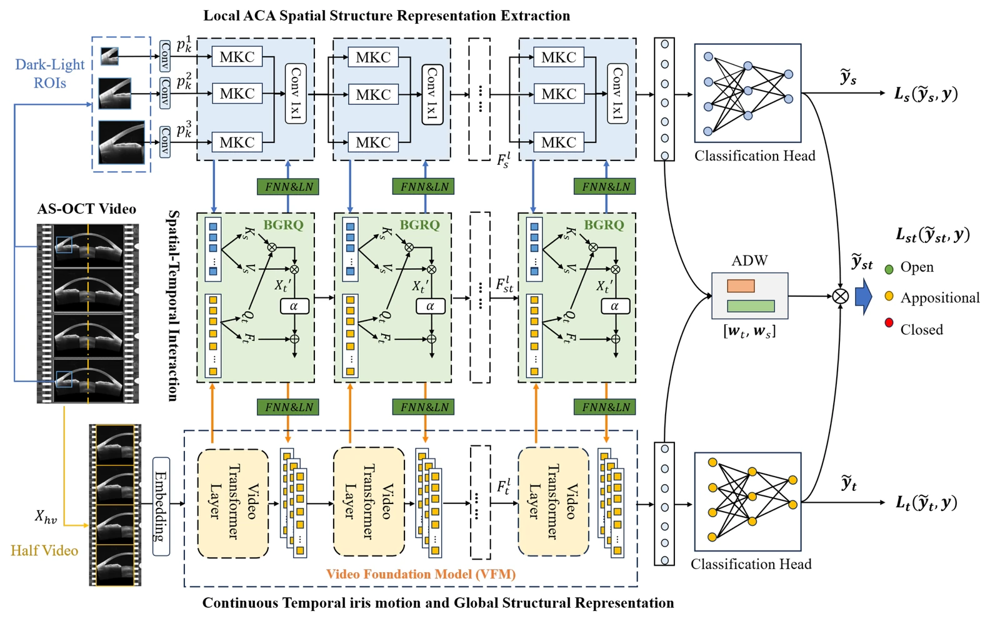

IEEE BIBM 2026 · Accepted
Spatiotemporal Collaborative Learning for Angle-Closure Progression Assessment Using Dynamic AS-OCT Videos
SCL-Net couples iris-motion representations from a video foundation model with local angle structures through bidirectional gated queries and adaptive decision fusion.

Evaluated on a dataset of 1,308 half-angle videos from 206 subjects (327 eyes), with eye-level train/validation/test separation. SCL-Net achieved 85.6% balanced accuracy on the 256-video, three-class test set.